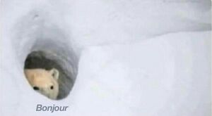

About Me
I’m 26 and in the middle of a career change. I joined IMD to learn to build websites, so I can be something other than a shoe store manager. I used to watch Married With Children and wonder why Al was such a crab, I totally get him now. Although I’m still not sure how he could afford that house while also feeding three other people.
I spend most of my downtime creating art. I don’t have a favourite medium at this point, but I’d like to become a graphic designer. I enjoy living in the countryside, so the idea that I could work remotely is enticing. Plus, my dog is a brat and eats my things when I leave the house, so this way I could avoid that.
Hobbies
- Eating
- Painting
- Being rad
"I am Beyoncé, always." - Michael Scott